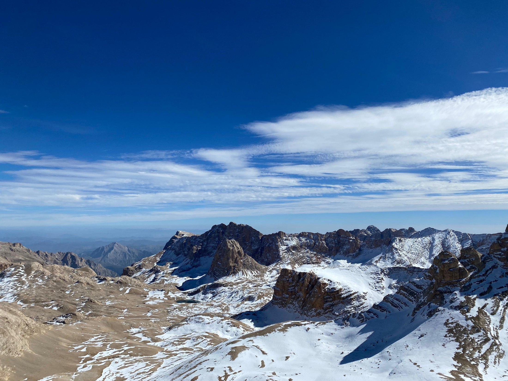
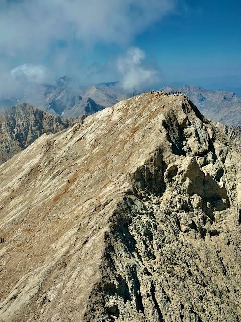

Hasan Dağı
3,268 m · February 2026 · Central Anatolia
Winter ascent of the iconic volcanic peak above the Cappadocian plains.

A record of the mountains I’ve climbed, the trails I’ve followed, and the adventures still waiting ahead.
View Summits ActivitiesThe journey so far
0 — 5,137 m
Every peak Beril has stood on top of.
3,268 m · February 2026 · Central Anatolia
Winter ascent of the iconic volcanic peak above the Cappadocian plains.


3,454 m + 3,300 m · July 2026 · Aladağlar
Yıldızbaşı and Yıldızbatı together — two connected summits completed in one ridge traverse.
The most recent trip in the journal.

1 July 2026 · Ballıkayalar, Kocaeli
Rappel station training and practice, followed by three sport climbing routes in another section of Ballıkayalar.
The peaks still on the list.